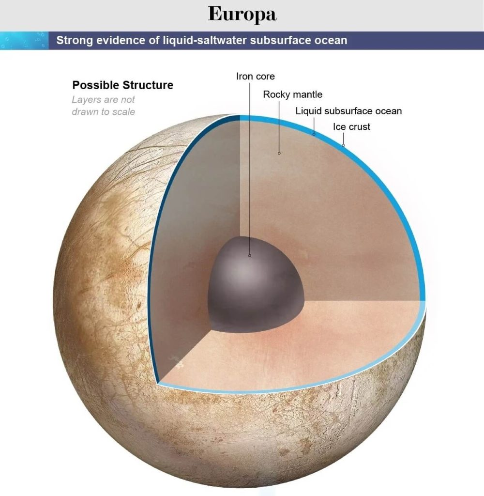
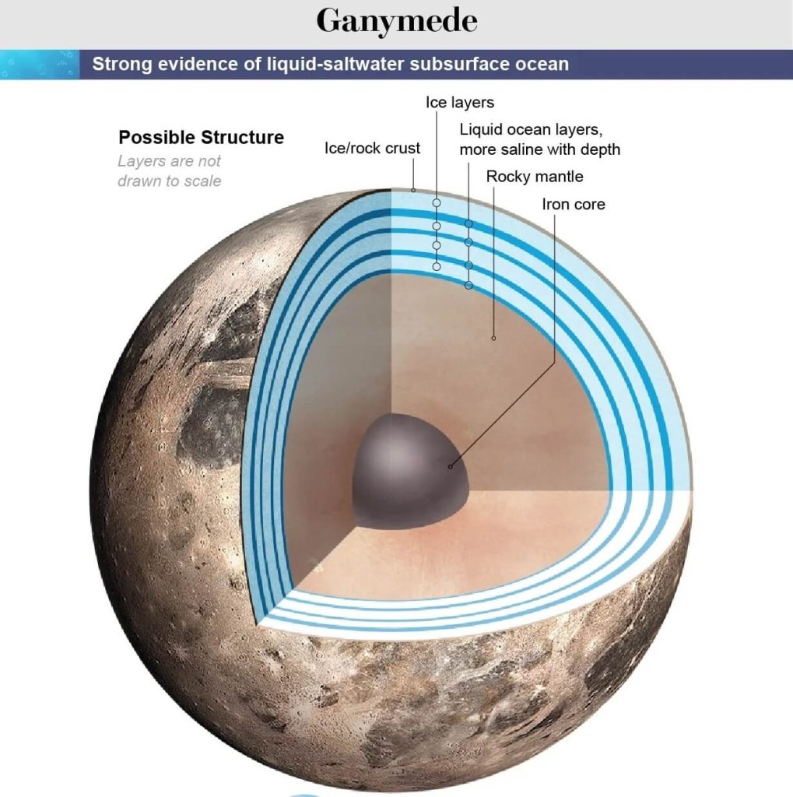
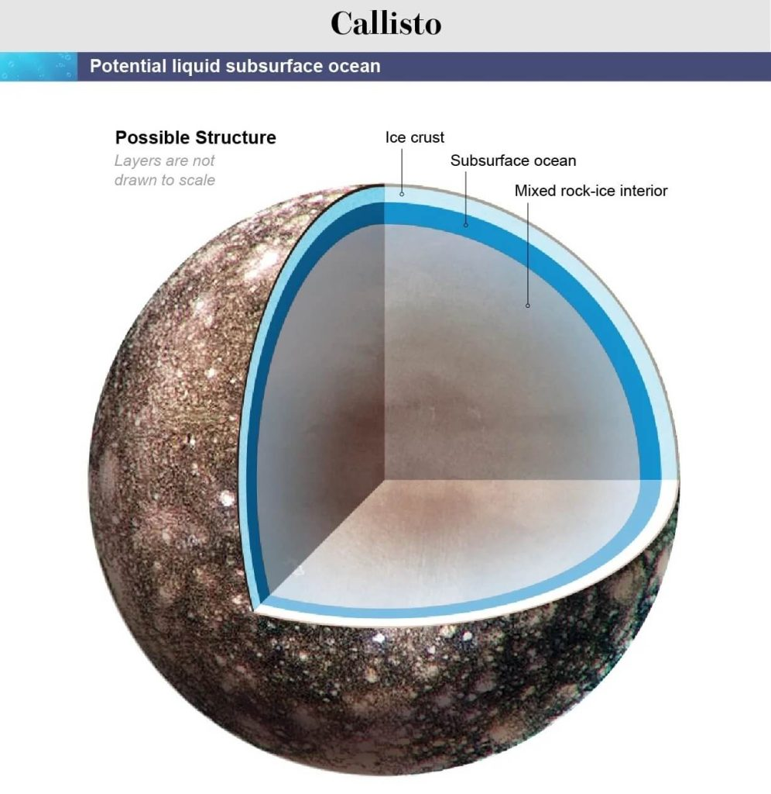
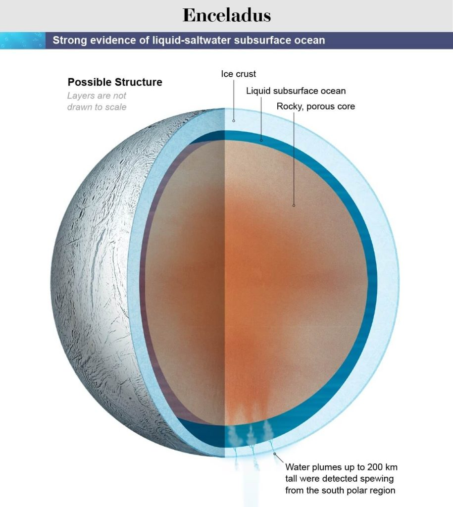
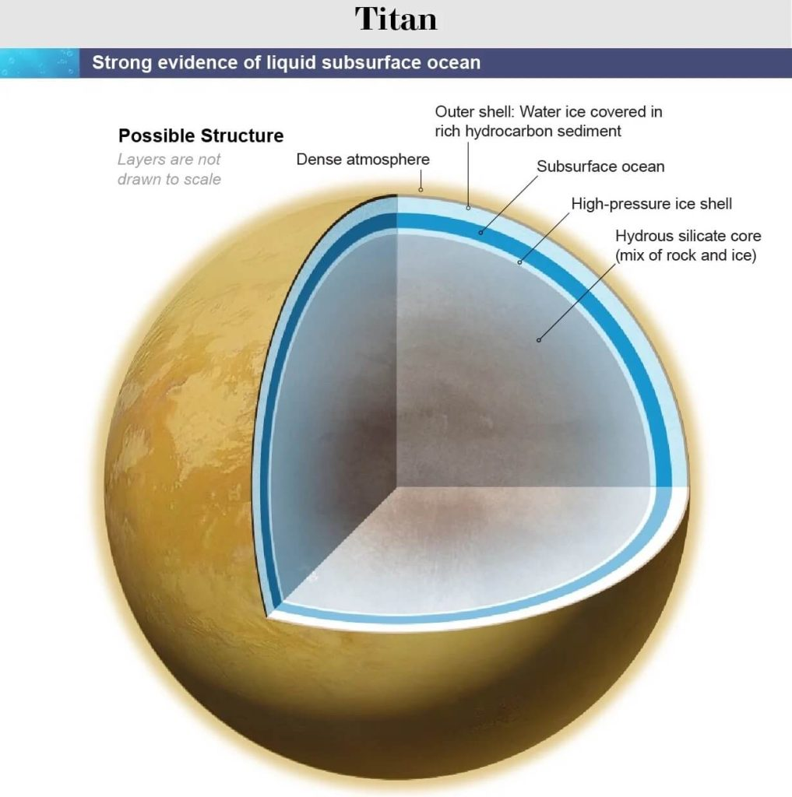
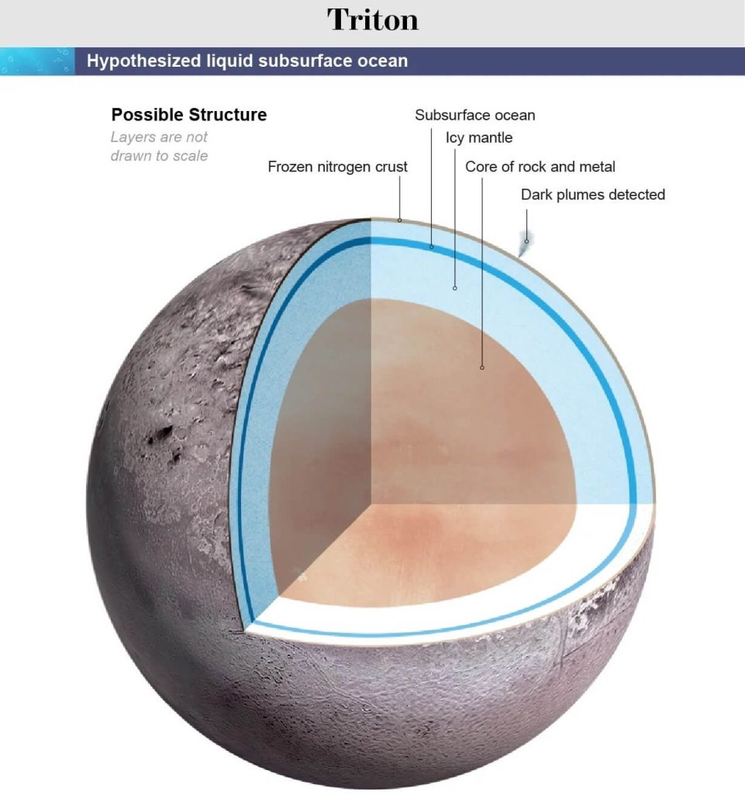

ကာစီနီ အာကာသ သုတေသန ယာဉ်မှာ ရေ ကို ဓါတ်ခွဲစစ်ဆေးနိုင်တဲ့ ကိရိယာတွေ ပါမသွား ခဲ့ပါဘူး။ ဒါပေမယ့် ဒီ တွေ့ရှိချက်ဟာ နေအဖွဲ့အစည်း အတွင်းက ရေခဲဖုံး နေတဲ့ လ တွေအပေါ် သိပ္ပံ ပညာရှင် တွေရဲ့ စိတ်ဝင်စားမှုကိုတော့ တိုးပွား သွားစေ ခဲ့ပါတယ်။
နေအဖွဲ့အစည်း အတွင်းမှာ ရှိတဲ့ လတွေ အနက်က အနည်းဆုံး လ ၆ စင်းမှာ သက်ရှိတွေ အသက်ရှင်သန် ပေါက်ဖွား နေနိုင်တယ်လို့ ပညာရှင်တွေက ခန့်မှန်း ထားကြပါတယ်။ ဒီအထဲမှာ စနေဂြိုဟ်ကို ပတ်နေတဲ့ ဂြိုဟ်ရန်လ ၂ စင်း၊ ကြာသပတေးဂြိုဟ်ကို ပတ်နေတဲ့ ဂြိုဟ်ရံလ ၃ စင်းနဲ့ နက်ပ်ကျွန်းဂြိုဟ်ကို ပတ်နေတဲ့ ဂြိုဟ်ရံလ တစင်းတို့ ပါဝင်ပါတယ်။
ဒီ ဂြိုဟ်တွေဟာ ရေခဲ ဖုံးလွှမ်းနေတဲ့ ဂြိုဟ်တွေ ဖြစ်ကြပါတယ်။ ဒါပေမယ့် ဒီ ရေခဲပြင်လွှာရဲ့ အောက်ခြေမှာ အရည်ပျော် နေတဲ့ သမုဒ္ဒရာ ရေပြင်ကြီး ရှိနေနိုင်တယ်လို့ ပညာရှင် တွေက ခန့်မှန်းပါတယ်။ ဒီဂြိုဟ်တွေရဲ့ မျက်နှာပြင်ဟာ အေးခဲနေ ပေမယ့် ဒီ ရေခဲပြင်အောက်က ဗဟိုချက် ကတော့ ပူနွေးနေမှာမို့ ရေခဲ မျက်နှာပြင်နဲ့ ဗဟိုအူတိုင် ကြားကမှာ ရေဟာ အရည်အဖြစ် ရှိနေနိုင်တယ်လို့ ပညာရှင် တွေက ခန့်မှန်းကြတာ ဖြစ်ပါတယ်။
ကမ္ဘာပေါ်မှာတော့ ရေဟာ အသက်ဇီဝင် ရှင်သန် ပေါက်ဖွားနိုင်ဖို့ မရှိမဖြစ်တဲ့ လိုအပ်ချက် တစ်ခု ဖြစ်ပါတယ်။ အခုထိတော့ နေ အဖွဲ့အစည်း အတွင်းမှာ မားစ်ဂြိုဟ်ပေါ်က လွဲလို့ အရည်ပျော် နေတဲ့ ရေရှိနိုင်ဖို့ အနီးစပ်ဆုံး နေရာတွေဟာ နေအဖွဲ့အစည်း အပြင်စည်းက ရေခဲနေတဲ့ ဂြိုဟ်ရံလတွေပဲ ဖြစ်ကြပါတယ်။
ဥရောပ အာကာသ အေဂျင်စီက ပြီးခဲ့တဲ့ ဧပြီလ အတွင်း လွှတ်တင်ခဲ့တဲ့ ဂျူပီတာ ရေခဲလများ စူးစမ်းရှာဖွေရေး အာကာသယာဉ် (Jupiter Icy Moons Explorer, nicknamed JUICE) ဟာ ဂျူပီတာရဲ့ ရေခဲ ဖုံးလွှမ်းနေတဲ့ ဂြိုဟ်ရံလ တွေဖြစ်တဲ့ ယူရိုပါ (Europa)၊ ကာလစ္စတို (Callisto) နဲ့ ဂန်နီမိဒ် (Ganymede) လ တွေကို အသေးစိတ် စူးစမ်း လေ့လာမှုတွေ ပြုလုပ်သွားမှာ ဖြစ်ပါတယ်။
နာဆာရဲ့ Europa Clipper မစ်ရှင် စီမံကိန်း ကလဲ ၂၀၂၄ အတွင်းမှာ ဂျူပီတာ ဂြိုဟ်နဲ့ ယူရိုပါ ဂြိုဟ်ရံလ တွေကို လေ့လာသွားမှာ ဖြစ်ပါတယ်။ ဒီ စီမံကိန်းတွေက ရလာတဲ့ ရလဒ်တွေဟာ ဒီ ဂြိုဟ်ရံလ တွေနဲ့ ပါတ်သက်တဲ့ ကျွန်တော်တို့ရဲ့ အမြင်တွေကို ပြောင်းလဲသွားကောင်း ပြောင်းလဲသွား စေနိုင်မှာ ဖြစ်ပါတယ်။
“နေအဖွဲ့အစည်းရဲ့ အပြင်စည်းမှာ အရည်ပျော် နေတဲ့ ရေပင်လယ်တွေ ရှိတဲ့ လတွေနဲ့ ပြည့်နေ နိုင်ပါတယ်။ ဒီအထဲက အချို့ လတွေမှာ ဘူမိအပူ (geothermal) ထွက်ရှိနေပြီး ပင်လယ်ရဲ့ အခြေမှာ ရေနဲ့ ကျောက်သားအကြား ဓါတ်ပြုမှုတွေ ဖြစ်ပေါ် နေနိုင်ပါတယ်” လို့ Woods Hole Oceanographic Institutionက သမုဒ္ဒရာဗေဒ ပညာရှင် တစ်ဦးဖြစ်သူ ခရစ်စ် ဂျာမန် (Chris German) က ရှင်းပြပါတယ်။ သူဟာ နာဆာက ထောက်ပံ့ထားတဲ့ Network for Ocean Worlds (NOW) မှာ ဦးဆောင် ပါဝင်သူ သုတေသီ တစ်ဦး ဖြစ်ပါတယ်။
ဒါဆို ဒီ အချက်တွေက ဘာ့ကြောင့် အရေးပါ ရတာလဲ။ “ကမ္ဘာပေါ်မှာတော့ ဒီလို အခြေအနေမျိုး ရှိတဲ့ နေရာတိုင်းမှာ အသက်ဇီဝတွေ ဖြစ်ထွန်း ပွားများ လာကြပါတယ်” လို့ သူက ဆက်ရှင်း ပြပါတယ်။
Europa နဲ့ Enceladus လတွေပေါ်က အရည် မပျော့်တပျော် ရေခဲရည် ထဲမှာ အသက်ဇီဝတွေ ပွားများ နေနိုင်ပါတယ်။ နောက်ပြီး Ganymede ရဲ့ ရေခဲပြင်အောက် ပင်လယ်ရေငန် ထဲမှာလဲ အသက်ဇီဝတွေ ရှင်သန်နေ နိုင်ပါတယ်။
တိုက်တန်လ မှာ ဆိုရင်လဲ မိသိန်း နဲ့ အီသိန်း ဓါတ်ငွေ့ရည် တွေက ပင်လယ် ချောင်းမြောင်းတွေလို စီးဆင်း နေတာပါ။ ဒီ မိသိန်း မြင်ချောင်း တွေထဲမှာလဲ အသက်ဇီဝ ပေါက်ဖွား နေနိုင်ပါတယ်။ ဒါ့အပြင် ဂြိုဟ်ပု (Dwarf planets) တွေ ဖြစ်ကြတဲ့ စီးရီးစ် (Ceres) နဲ့ ပလူတို (Pluto) ဂြိုဟ်တွေရဲ့ နက်ရှိုင်းတဲ့ ဥက္ကာတွင်း ကြီးတွေ ရဲ့ အခြေက ဆားငန်ရေအိုင် တွေထဲမှာလဲ အသက်ဇီဝ ဖြစ်ထွန်း နေနိုင်ပါတယ်။
နောက်ဆုံး ပြောရရင် လတွေရဲ့ ရေခဲပြင် ထဲမှာ ဖြစ်ပေါ်နေတဲ့ အပေါက်လေးတွေ ထဲမှာတောင် အရည်ပျော်နေတဲ့ ရေ ရှိနေနိုင်ပြီး ဒီ ရေထဲမှာလဲ အဏုဇီဝ သက်ရှိတွေ ရှင်သန် နေနိုင် ပါသေးတယ် လို့ နာဆာရဲ့ Jet Propulsion Laboratory က သုတေသီ တစ်ဦးဖြစ်သူ နက္ခတ်ဇီဝဗေဒ ပညာရှင် မိုက် မလာစကာ (astrobiologist Mike Malaska) က ရှင်းပြပါတယ်။
ကမ္ဘာပေါ်က Greenland ဒေသက ရေခဲပြင်မှာ ဖြစ်ပေါ်နေတဲ့ ရေခဲပြင်ကြီးရဲ့ အောက်ခြေ ကီလိုမီတာ ၂.၅ လောက် အနက်မှာ ရှိနေတဲ့ ဖိအားနဲ့ ပန်ဝန်းကျင် အခြေအနေ တွေဟာ ယူရိုပါ လပေါ်က ရေခဲပြင်ကြီးရဲ့ အပါ်ပိုင်းက အခြေအနေ တွေနဲ့ တူညီ နေပါတယ်။ ဒီ အနက်မှာ ရှိတဲ့ အဏုဇီဝ ပိုးတွေရဲ့ ပမာဏ ကလဲ ဒိန်ချဉ် တစ်ဇွန်းမှာ ပါတဲ့ ပိုးမွှား ပမာဏနဲ့ တူညီ ပါတယ်။
ဒီ အနက်မှာ သဘာဝ အလျှောက် ဖြစ်ပေါ်တဲ့ ဓါတုဓါတ်ပြုမှု တွေနဲ့ ဘူမိဗေဒ လှုပ်ရှားမှု တွေက အဲ့သည်လောက် အနက်မှာ ရှင်သန်နေတဲ့ အဏုဇီဝ ပိုးမွှား (microbes) တွေ အတွက် လိုအပ်တဲ့ စွမ်းအင်ကိုထောက်ပံ ပေးမှာ ဖြစ်ပါတယ်။ နောက်ပြီး ကမ္ဘာ့ သမုဒ္ဒရာ ရေနက်ပိုင်း မှာလိုပဲ ရေအောက်မီးတောင် တွေက ထွက်တဲ့ အပူကလဲ စွမ်းအင်ကို ထောက်ပံ့ပေးမှာ ဖြစ်ပါတယ်။
ကြာသပတေးဂြိုဟ်၏ အရံလများ
ဂယ်လီလီယို အာကာသယာဉ်ဟာ ကြာသပတေးဂြိုဟ်ရဲ့ အရံလ ဖြစ်တဲ့ ယူရိုပါ လပေါ်မှာ ရေခိုးရေငွေ့တွေဟာ အမြင့် ကီလိုမီတာ ၁၆၀ လောက်ထိ ရေပန်းပမာ ပန်းထွက်နေနိုင်တဲ့ လက္ခဏာတွေ တွေ့ရှိခဲ့ပါတယ်။နောက်ပြီး ဂျူပီတာ (ကြာသပတေး ဂြိုဟ်) ရဲ့ သံလိုက်စက်ကွင်းကလဲ ယူရိုပါ (Europa) လပေါ်မှာ လျှပ်စစ်ဓါတ်အား ဖြစ်ပေါ်စေတယ် ဆိုတာ တွေ့ခဲ့ရပါတယ်။ ဒီအချက်က ဘာကို ပြနေလဲ ဆိုတော့ ယူရိုပါ ပေါ်မှာ အရည်ပျော်နေတဲ့ ဆားငန်ရေ ရှိတယ်ဆိုတဲ့ အထောက်အထားပဲ ဖြစ်ပါတယ်။
နောက်ပြီး ယူရိုပါရဲ့ မျက်နှာပြင်ဟာလဲ လုံးဝန်း ညီလာလို့ နေပါတယ်။ ဒီအချက်က ဘာကို ပြနေလဲ ဆိုတော့ သူ့အောက်မှာ အရည်ပျော်နေတဲ့ ဝတ္ထု တစုံတခု ရှိနေတာကို ပြနေပါတယ်။ ဒီ မျက်နှာပြင်အောက်က အရာဟာ အရည်ပျော် နေတဲ့ ရေဖြစ်ဖို့ များတယ်လို့ ယုံကြည် ကြပါတယ်။


ကယ်လစ္စတို လပေါ်မှာ မြေအောက်ရေ ရှိမရှိ ဆိုတာကတော့ လက်ရှိ အငြင်းပွား နေဆဲပဲ ဖြစ်ပါတယ်။ ဒါပေမယ့် ဒီ လဟာ မြေအောက်ရေ ရှိခဲ့ရင် သက်ရှိတွေ ရှင်သန်နိုင်တဲ့ အခြေအနေ ရှိတဲ့ လတစင်း ဖြစ်ပါတယ်။

စနေဂြိုဟ်၏ လများ
စနေဂြိုဟ်ရဲ့ လတစင်း ဖြစ်တဲ့ အန်စီလေဒပ်စ် (Enceladus) ဟာ နေအဖွဲ့အစည်း အတွင်းမှာ အလင်းပြန်အား အကောင်းဆုံး အရာ ဝတ္ထု ဖြစ်ပါတယ်။ သူ့ရဲ့ လေထုထဲကို လွင့်ထွက်လာတဲ့ ရေငွေ့တွေဟာ အေးခဲပြီး နှင်းအဖြစ် မြေပြင်ပေါ်ကို ပြန်ကျလာပါတယ်။ ဒါ့ကြောင့် သူ့ရဲ့ မျက်နှာပြင် ဟာလဲ ဖြူဖွေးလို့ နေပါတယ်။သူ့ရဲ့ မျက်နှာပြင်ဟာ ယူရိုပါ လ လိုပဲ ညီညာပြန့်ပြူးလို့ နေပါတယ်။ ဒါ့ကြောင့်လဲ သူ့ရဲ့ အတွင်းပိုင်းမှာ ဘူမိဗေဒ လှုပ်ရှားမှုတွေ ဆက်လက် ဖြစ်ပေါ်နေဆဲလို့ ယူဆ ကြပါတယ်။
ဒီလက မှုတ်ထုတ်လိုက်တဲ့ ရေခိုးရေငွေ့ တွေဟာ စနေဂြိုဟ်ရဲ့ ဂြိုဟ်ခါးပတ်ကွင်း တွေအနက်က E ကွင်းကို ဖြစ်ပေါ်စေပါတယ်။ ဒါ့ကြောင့် ဒီဂြိုဟ်က ထွက်တဲ့ ရေကို ဓါတ်ခွဲစမ်းသပ်ဖို့ဆို E ring က ရေကို နမူနာ ယူပြီး အလွယ်တကူ စမ်းသပ်နိုင်မှာ ဖြစ်ပါတယ်။

တိုင်တန်လ (Titan) ပေါ်မှာ ထူထပ်သိပ်သည်းတဲ့ လေထုရှိပြီး ဒီလေထုထဲမှာ နိုက်ထရိုဂျင် ဓါတ်ငွေ့ တွေ အဓိက ပါဝင်ပါတယ်။ ဒါပေမယ့် သူ့လေထု ထဲမှာ အောက်ဆီဂျင်တော့ မပါဝင် ပါဘူး။
နောက်ပြီး အရည်ဖြစ် နေတဲ့ မိသိန်း နဲ့ အီသိန်း ဓါတ်ငွေ့တွေ အများအပြား လဲ လပေါ်မှာ တွေ့ရပါတယ်။ ဒါ့ကြောင့် ဒီ လပေါ်မှာ သက်ရှိတွေ ရှိမယ်ဆို မိသိန်းဓါတ်ငွေ့ထဲမှာ ရှင်သန်နိုင်တဲ့ အဏုဇီဝ ပိုးတွေ ဖြစ်ဖို့ များပါတယ်။

နက်ပ်ကျွန်း၏လ
နက်ပ်ကျွန်းဂြိုဟ်ရဲ့ လတွေ အနက် အကြီးဆုံး လဟာ ထရစ်တွန် လ (Triton) ဖြစ်ပါတယ်။ သူဟာ နက်ပ်ကျွန်းကို ပြောင်းပြန် ပတ်နေတာပါ။ ပညာရှင် တွေက သူ့ ရဲ့ အတွင်းပိုင်းမှာ ပူနွေးတဲ့ ပင်လယ်တွေ ရှိနေနိင်တယ်လို့ ယူဆ ကြပါတယ်။